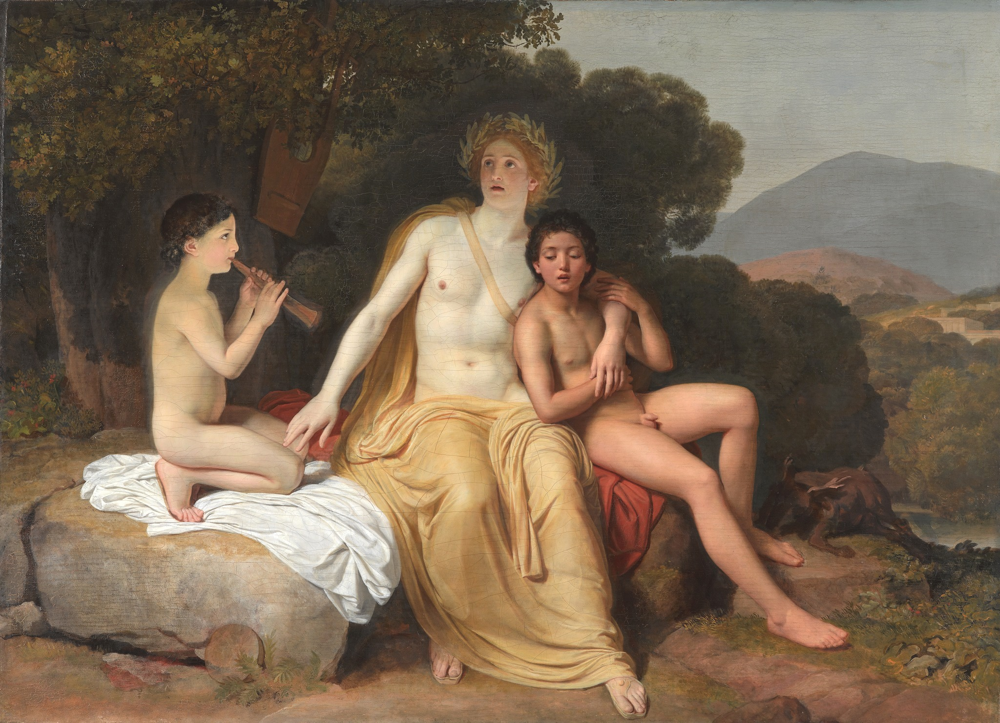

Иванов Александр Андреевич
Аполлон, Гиацинт и Кипарис, занимающиеся музыкой и пением
Неоконченная картина. Сюжет картины представляет собой вольную фантазию художника
на тему нескольких древнегреческих мифов. Бог солнца, искусства, музыки и поэзии Аполлон вместе со своими любимцами
музицирует на лоне природы. Иванов говорил, что хочет изобразить "наготу вместо натурного класса", иначе говоря,
соединить классическую красоту с живым романтическим чувством. Он выполняет этюды с античных скульптур (например,
с головы Аполлона Бельведерского или барельефа с изображением спящего Эндимиона), но старается одушевить образы,
наполнив их теплом и светом. Художник стремится оживить природу античной гармонией и в то же время воссоздать в
ней античность не как набор привычных форм, а как абсолютный идеал, золотой век, о наступлении которого он мечтал
всю жизнь. Возникает идиллический мир, ясный и хрупкий, неслучайно жанр идиллии столь популярен в поэзии того
времени. В 1828 А.А.Дельвиг пишет идиллию "Конец золотого века", а сам Иванов, объясняя, почему не завершил картину,
говорил, что "утратил веселое расположение духа", поскольку не мог не чувствовать утопичность своих мечтаний